OtomaX HTH
OtomaX HTH disingkat menjadi OH, merupakan Modul yang dapat menghubungkan antar software OtomaX, Kategori Umum ke sesama Kategori Umum, atau Kategori Umum ke Kategori Cabang.
Cara setting Modul OH sebagai berikut:
-
Pilih Modul OtomaX HTH -> Klik Kanan -> Setting
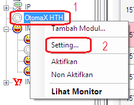
Akan tampak tampilan berikut:
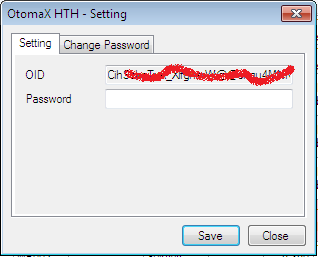
-
Klik Change Password, akan tampak tampilan berikut:
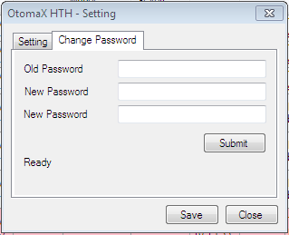
-
Lakukan seperti pada gambar berikut:
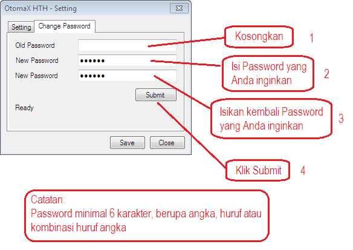
Setelah klik Submit silahkan ditunggu, akan tampak tampilan berikut:
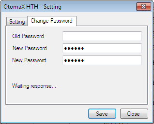
Jika karakter Password kurang dari 6 karakter akan tampak tampilan berikut saat klik Submit:
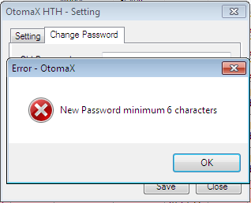
Jika menjumpai pesan sebagaimana ditunjuk tanda panah di gambar dibawah setelah klik Submit, silahkan coba lagi membuat Password OH beberapa waktu kedepan:
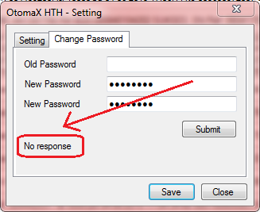
Apabila sudah mencoba membuat Password OH berkali - kali di waktu berbeda - berbeda (misal: mencoba buat jam 07:00, lalu mencoba lagi jam 08:00, lalu mencoba lagi jam 09:00, jam 10:00, jam 11:00 dan seterusnya) dan tidak kunjung sukses, silahkan hubungi Dealer atau Reseller OtomaX kesayangan Anda untuk dilakukan pengecekan lebih lanjut
Dan apabila sudah muncul gambar berikut, berarti pembuatan Password sudah Sukses:
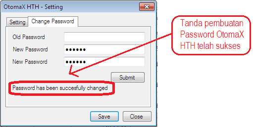
-
Klik Setting, perhatikan gambar:
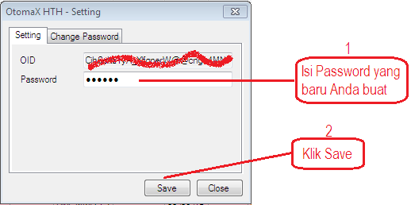
- Pilih Modul OtomaX HTH -> Klik kanan -> Klik Aktifkan dan kemudian Modul akan menyala biru pertanda siap bekerja
-
Selanjutnya buat Modul untuk Host to Host ke Supplier. Pilih Modul OtomaX HTH -> klik kanan -> klik Tambah Modul
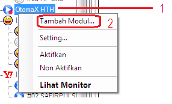
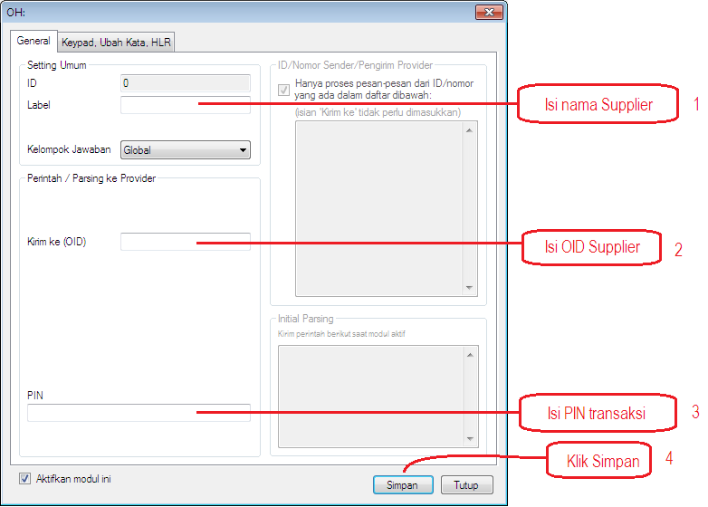
Catatan:
OID supplier bisa Anda dapatkan dengan meminta kepada supplier Anda; atau ketik: OID (huruf besar semua) kirim ke IM Center supplier Anda
-
Daftarkan OID Anda kepada supplier Anda; atau ketik UBAHOID<spasi>OID_ANDA<spasi>PIN_TRX, Contoh: UBAHOID CihSTjyhIldY_XlfgnrkY@@cngu4MNKkTzUjdkHyejdjkll 1234 lalu kirimkan ke IM Center supplier Anda. (Format Ubah OID menyesuaikan milik supplier Anda)
Catatan:
OID Anda sendiri bisa Anda dapatkan di Modul OtomaX HTH -> Klik kanan -> klik Setting -> Kotak OID
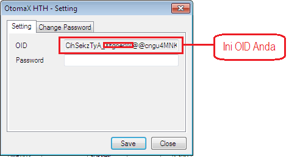
-
Kemudian buat parsing. Klik Administrasi -> klik Parsing ke Provider -> Modul OH #NamaSupplier
Perlu diketahui syntax perintah parsing OH berbeda dengan Modul yang lain, yaitu produk=KODE[nominal] (syntax yang berwarna hijau merupakan patokan/tidak dapat diubah - ubah dan harus ditulis dengan ejaan huruf kecil semua, adapun syntax yang berwarna biru diubah sesuai Kode Produk Supplier)
Contoh:
Supplier Anda memiliki Kode Produk untuk Telkomsel Nominal 5.000 berupa: TH5; maka penulisan perintah parsing OH menjadi produk=TH[nominal]. Contoh lain supplier Anda punya Kode Produk berupa: X10; maka penulisan perintah parsing OH menjadi produk=X[nominal] begitu seterusnya.
Implementasi key: produk
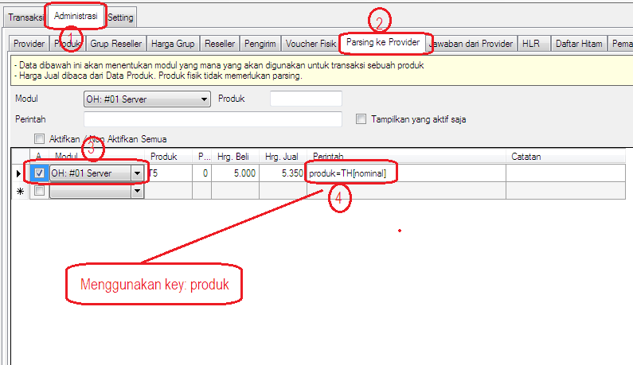
Implementasi key: product
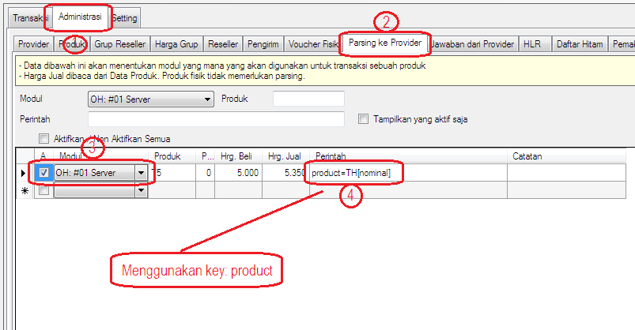
Implementasi key: nominal
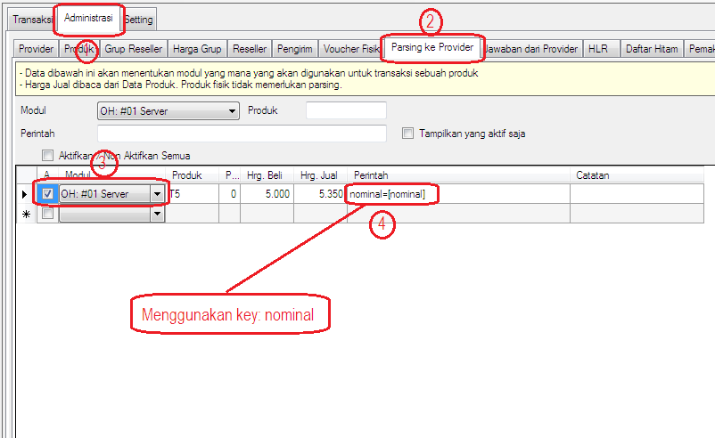
Catatan:
Parameter perintah parsing OH adalah key=value, dimana key adalah- produk (ejaan huruf kecil semua)
- product (ejaan huruf kecil semua), dan
- nominal (ejaan huruf kecil semua)
Ejaan huruf besar kecil penulisan key berpengaruh kepada bekerja tidaknya perintah parsing
-
Pilih Modul OH untuk Host to Host ke Supplier -> klik kanan -> klik Aktifkan. Icon Modul akan berwarna biru pertanda siap bekerja.
Apabila icon Modul OH ke Supplier berwarna abu - abu itu pertanda Modul OtomaX HTH Supplier sedang tidak aktif. Silahkan kontak Supplier Anda.
- Selesai.
Sebagai tambahan informasi, OtomaX HTH mempunyai beberapa kekhususan yang membuatnya berbeda dengan modul yang lain, antara lain:
-
Transaksi menggunakan OH tidak perlu melakukan setting penangkap jawaban sebab sudah ditangani secara otomatis oleh OtomaX, namun kalau penangkap jawaban yang tersedia dirasa kurang cocok dapat juga dilakukan setting penangkap jawaban sesuai yang dinginkan, adapun caranya sama dengan men-setting Modul yang lain, lihat gambar di bawah ini
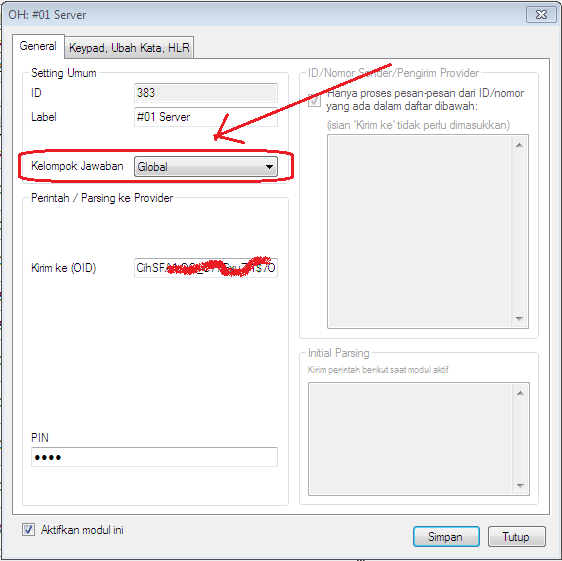
-
Untuk update harga beli parsing transaksi via OH tidak perlu membuat regex, cukup centang checkbox seperti ditunjukkan gambar berikut:
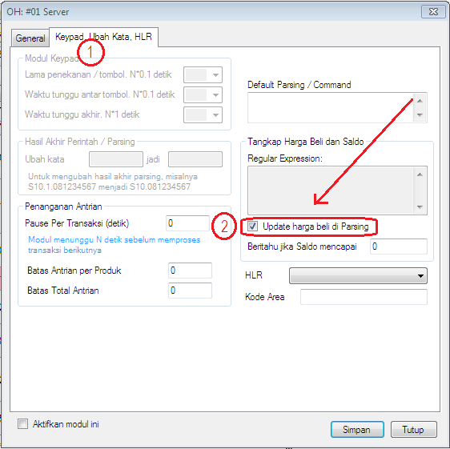
- Untuk transaksi ke-2, ke-3 dan seterusnya di OH tidak perlu mencantumkan parameter [counter] di parsing, sudah ditangani otomatis oleh OtomaX.
Jika memiliki pertanyaan terkait fitur di atas silahkan kirimkan ke alamat email support@otomax-software.com atau klik disini